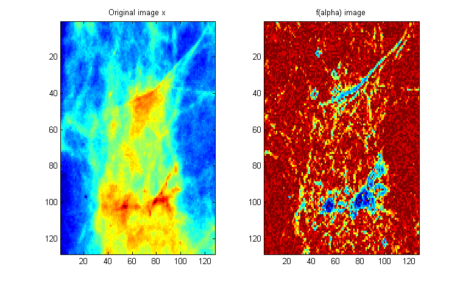
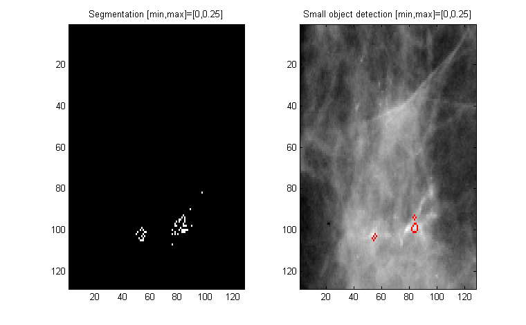
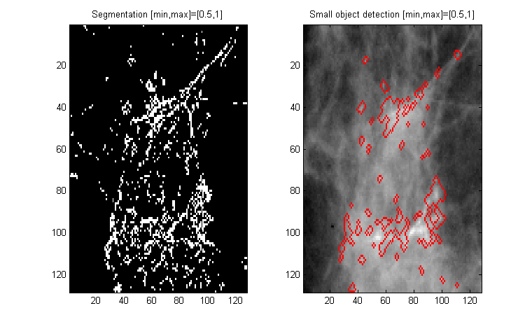

| FRACLAB Functions |
|
Computes the black and white segmentation of the f(alpha) image and performs the Small Objects Detection over the original image.
NOTE: In the FracLab graphical interface this function is associated with the alphaimage function
and the falphaimage function.
[Yh,catSe] = spotted(x,f)
[Yh,catSe] = spotted(...,[min,max])
[Yh,catSe] = spotted(x,f) Estimates the black and white segmentation, Yh, of the f(alpha) image, f, and estimates the Haussdorf segmentation, catSe, in order to perform the small object detection over the input image x.
[Yh,catSe] = spotted(x,f,[min,max]) Estimates the black and white segmentation, Yh, of the f(alpha) image, f, and estimates the Haussdorf segmentation, catSe, within the interval (min:max). The parameters min and max are positive reals in (0:2). The couple [min,max] sets the range of values of f(alpha) that defines the segmentation, i.e. points in the original image with alpha such that f(alpha) belongs to [min,max] are kept in the segmented image. If [min,max] is not specified the default value are [min,max] = [0,0.25].
images_loc = which('spotted.html');
x = imread(fullfile(fileparts(images_loc),'images_examples','Segmentation','m213.pgm'));
x = ima2mat(x); A = alphaimage(x,2,'neg'); F = falphaimage(A,100);
[Y1,C1] = spotted(x,F);
[Y2,C2] = spotted(x,F,[0.5,1]);
figure; subplot(1,2,1); imagesc(x); title('Original image x');
subplot(1,2,2); imagesc(F); title('f(alpha) image');
figure; subplot(1,2,1); imagesc(Y1); colormap(gray); title('Segmentation [min,max]=[0,0.25]');
subplot(1,2,2); imagesc(C1); title('Small object detection [min,max]=[0,0.25]');
figure; subplot(1,2,1); imagesc(Y2); colormap(gray); title('Segmentation [min,max]=[0.5,1]');
subplot(1,2,2); imagesc(C2); title('Small object detection [min,max]=[0.5,1]');



[1] J. Lévy-Véhel, P. Mignot "Multifractal segmentation of images", Fractals, Vol. 2 No. 3, (2004) 379-382.
[2] T. Stojic, I. Reljin, B. Reljin "Adaptation of multifractal analysis to segmentation of microcalcifications in digital mammograms",
Physica A: Statistical Mechanics and its Applications, Vol. 367 No. 15, (2006) 494-508.
| |
regression_elimination | srmpfbm | |